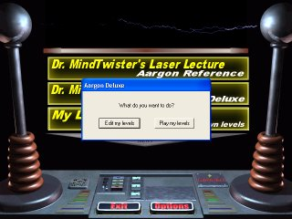
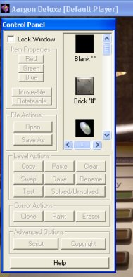

Select "My Levels".
After selecting "My Levels", a dialog box will appear. You will have two choices: "Edit My Levels" or "Play My Levels". If you select "Play My Levels", the editor will not be enabled, and the game will play as normal. If you select "Edit My Levels", then the editor will be enabled and you will be able to create and modify your own levels.

Select "Edit My Levels".
Editing takes place in windowed mode. Note that your windows screen resolution should be at least 800x600 and you must be using a video mode with at least 65,000 colors (HiColor mode). Editing will not work in 256 color mode or less. If you try and use the editor and your screen resolution isn't correct a warning dialog will be displayed. The screen settings can be changed by right clicking on your windows desktop and selecting poperties, or by using control panel. (See Windows documentation for more info.)
The Editor Control Panel
After selecting edit mode, the game will switch to windowed mode and the Editor Control Panel will appear over top of it.
The Editor Control Panel may be moved to any location on the screen and can never be obstructed by the game window. Once in edit mode, you can begin editing by selecting a level as normal. The buttons on the Control Panel will become enabled.
The buttons are grouped into sections as follows:
Item Properties
The buttons in this section affect the currently selected item in the game window.
Red, Green, Blue: Change the color of the current item.File Actions
Moveable: Allows the current item to be moved during play.
Rotateable: Allows the current item to be rotated during play.
These buttons are for saving and loading levels to and from the disk.
Load: Load a level file into the current level.Level Actions
Save: Save the current level to a file on disk.
These buttons are for copying, saving or modifying general properties of the current level.
Copy: Copies the current level to memory.Cursor Actions
Paste: Pastes the current level from memory onto the screen.
Clear: Removes all items and changes the name of the level to "static map".
Swap: Swaps the currently level with the last level that was copied to memory.
Save: Save any changes made to the current level.
Rename: Change the name of the current level.
Test: Allows you to test the current level without saving.
Solved/Unsolved: Change the solved status of the current level.
These buttons affect how the cursor is used during editing.
Clone: When pushed, the game cursor paints with the currently selected item in the game window.Advanced Options
Paint: When pushed, the game cursor paints with the currently selected item in the editor control panel's item list.
Erase: When pushed, the game cursor becomes an eraser.
There are two options here.
Script: Sets a script file for the level. Script files are used to create tutorial levels.Help
Copyright: Used to set a copyright notice for your level.
Brings up this help file.